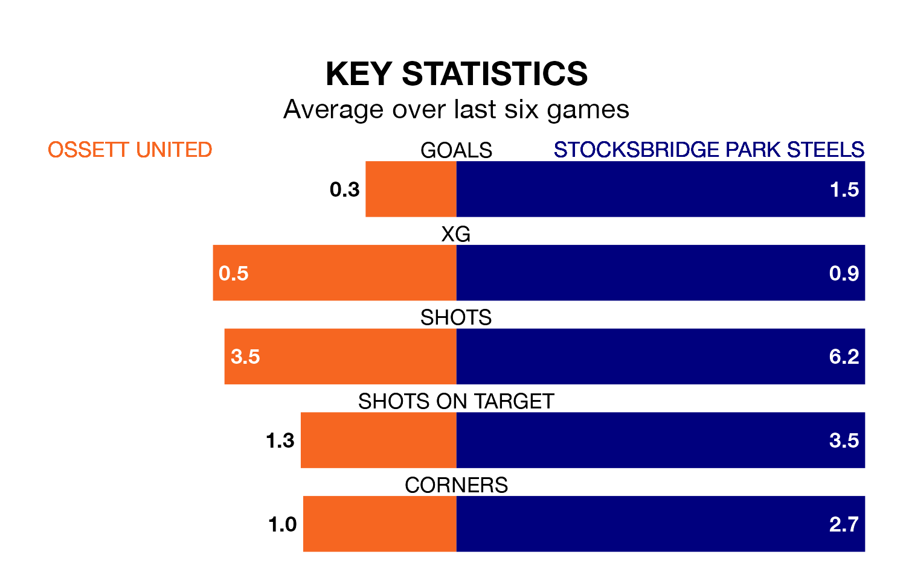

Saturday's match at the Stade France Ingfield sees two relegation candidates play each other, as 18th-ranked Ossett United host 17th-placed Stocksbridge Park Steels.
Ossett have picked up 19 points from their first 19 Northern Premier League Division One – East games, with five wins and four draws.
That is one point less than the Steels have collected, having won five and drawn five.
Ossett are in awful form in the Northern Premier League Division One East, with no wins and six losses from their last six games.
With two wins and three draws over that period, Stocksbridge's form is much better – they have taken nine points from 18, compared to United's zero.
In the last 10 years, Ossett and Stocksbridge have played each other on six occasions. Ossett won four of them, Stocksbridge one, and they drew once.
On average, Ossett scored 1.7 goals and the Steels 0.7 in those matches.
Their last meeting was on October 28, when Ossett won 1-0 away.
With 23 goals in 22 games so far this season, the hosts are the league's second-lowest scorers with 1.0 goals per game. And they are conceding more than average, letting in 46 goals at a rate of 2.1 per game.
The Steels are also below average scorers, with 1.3 goals per game, compared to a league average of 1.6. They have conceded 1.4 goals per game.
Ossett's last match was on January 13, a 2-1 loss against Ashington AFC, with getting the goal for Ossett.
Stocksbridge drew 2-2 with Grantham Town last time out, also on January 13, with on the scoresheet.
Updated: 06:13 (UTC), 18/01/24